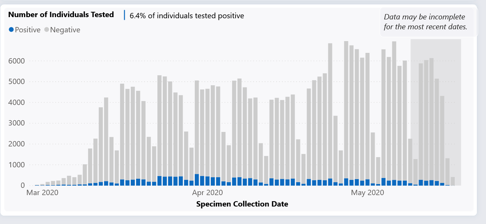

Data Quality - date reported vs. date of illness onset
Issue number 424
ggrowe opened this issue on May 15, 2020 at 5:59 pm
From the support request:
-
your case counts are the same for april 25-27. This is not reflected on the washington DOH site, which is where you claim to get your data from. I suspect this is because you (or the DOH site) had a retrieval failure on those days, but that failure should not be reflected in historical data.
-
more generally, your historical data for each day appears to be based on the value of the total case numbers retrieved in the snapshot on that day, from the Washington DOH site. But there are external factors affecting the DOH’s incoming flow of case reports, and when they add cases to the site, they assign each case to the day of illness onset. Your data would be much more meaningful if you reported out historical data by date of illness onset, rather than date that the DOH put the case up on their site. I assume this would apply to other states as well.
The net result is that (in my opinion) your data for washington are currently misleading. If there’s any way that I can help to fix this, please let me know.
Note from GG/support desk: this seems like a big ask and not sure if it is even doable. Let me know.
Comments
We updated the historical information in WA today based on the raw JSON from their data dashboard. 
The raw JSON and the “before” info in our “States Daily” tab is saved into this spreadsheet. https://docs.google.com/spreadsheets/d/e/2PACX-1vSou-cRR9OPyrUrM6lYmW-qOdU9DoCrwB7Tw8mEQESzOfL5AHA8VEiZ2hUG-3I-5ARUvStOExfRRaMS/pubhtml
These changes will be reflected on the website and the API today.
Thank you, I’ll report back to the individual!
Hi, here is a message back from the external source with an offer help make it happen! Link to Front message: https://app.frontapp.com/open/msg_dg7d9u9 I’ll say that I’ve passed it along. Reopening the issue, if you can please respond and then if there is no other action, just close it again.
Closing issue. I replied in Front
This seems to be related to https://github.com/COVID19Tracking/issues/issues/233 where we patched historical data based on revised data from WA and in general to the fact that WA revises historical data https://github.com/COVID19Tracking/issues/issues/307. I will look into it further.